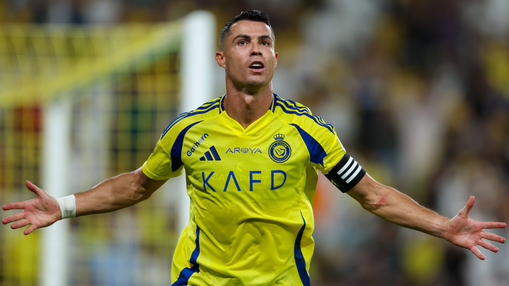

ünya futbolunun en büyük yıldızlarından biri olan Cristiano Ronaldo, kariyerine dair yaptığı son açıklamalar ve sahadaki performansıyla yeniden gündemin merkezine oturdu. Tecrübeli futbolcu, hem attığı gollerle yeni bir rekora daha yaklaşırken hem de futbol sonrası planları hakkında önemli ipuçları verdi. Suudi Arabistan temsilcisi Al‑Nassr forması giyen Ronaldo, son haftalarda gösterdiği performansla takımının en önemli isimlerinden biri olmayı sürdürüyor. 39 yaşındaki yıldız oyuncu, ligde attığı kritik gollerle takımını zirve yarışında tutarken kariyerindeki toplam gol sayısını da sürekli artırıyor. Futbol otoriteleri Ronaldo’nun ilerleyen yaşına rağmen üst düzey fiziksel performansını korumasını “modern futbolun en etkileyici hikâyelerinden biri” olarak değerlendiriyor. Portekizli yıldız, katıldığı bir röportajda futbolu bırakma planlarına da değindi. Ronaldo, hâlâ kendisini çok iyi hissettiğini ve mümkün olduğunca uzun süre sahada kalmak istediğini söyledi. Yıldız futbolcu açıklamasında, “Futbol benim tutkum. Kendimi iyi hissettiğim sürece oynamaya devam etmek istiyorum. Taraftarlara sahada en iyi performansımı göstermeyi borçluyum” ifadelerini kullandı.

Ronaldo’nun kariyerinde daha önce forma giydiği kulüpler arasında Manchester United, Real Madrid ve Juventus gibi Avrupa devleri bulunuyor. Özellikle Real Madrid döneminde kazandığı kupalar ve attığı gollerle kulüp tarihine adını altın harflerle yazdırmıştı. Uzmanlar, Ronaldo’nun yalnızca sahadaki başarılarıyla değil, aynı zamanda disiplinli yaşam tarzı ve profesyonelliğiyle de genç futbolcular için önemli bir örnek olduğunu vurguluyor. Yıldız oyuncu, sosyal medya paylaşımları ve antrenman görüntüleriyle de milyonlarca takipçisine ilham vermeye devam ediyor. Öte yandan futbol kulislerinde Ronaldo’nun kariyerinin son döneminde farklı projelere yönelebileceği konuşuluyor. Spor yatırımları, futbol akademileri ve medya projeleri gibi alanlarda aktif rol alabileceği iddia ediliyor. Ronaldo ise bu konuyla ilgili “Futboldan sonra da sporun içinde olacağım” diyerek gelecekte futbol dünyasından tamamen kopmayacağının sinyalini verdi. Kariyerinde sayısız kupa ve bireysel ödül bulunan Cristiano Ronaldo, futbol tarihinin en büyük oyuncularından biri olarak gösterilmeye devam ediyor. Taraftarlar ise efsane futbolcunun sahada daha ne kadar süre kalacağını merakla takip ediyor. ⚽🔥 Ana Sayfaya dön